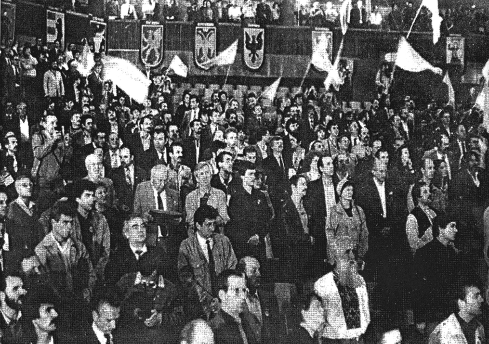
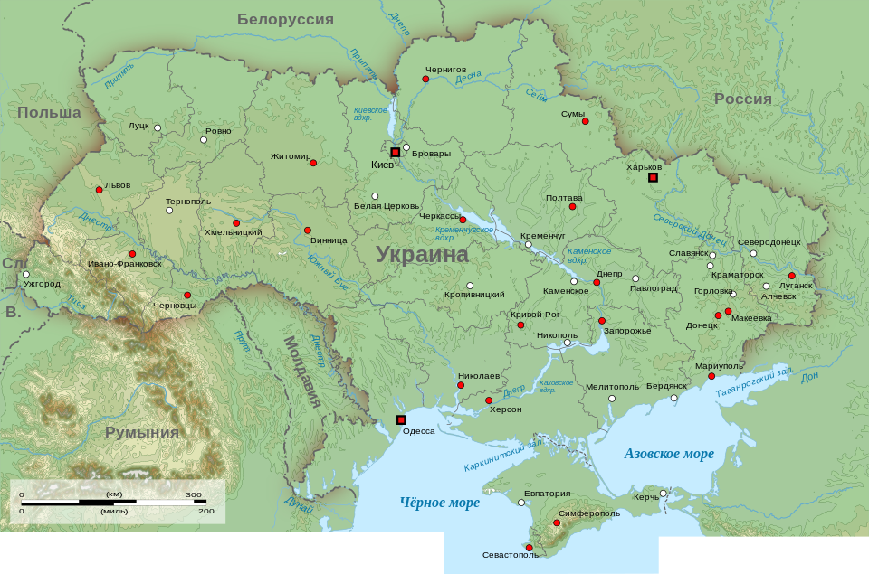

Провозглашение независимости Украины (укр. Проголошення незалежності України) — процесс преобразования Украинской
Советской Социалистической Республики в составе СССР в независимое государство Украина. Этот процесс был частью
Перестройки, Революций 1989 года и распада СССР.
Этапы процесса включали в себя создание движения Народного руха Украины (1989), принятие Акт провозглашения
независимости Украины (1991) и проведение всеукраинского референдума о его подтверждении (1991).
В период застоя фактическим руководителем Украинской Советской Социалистической Республики был первый секретарь ЦК
Компартии Украины Владимир Щербицкий, представитель так называемого «Днепропетровского клана». В 1981 году были
арестованы практически все члены Украинской Хельсинкской группы — объединения деятелей украинского правозащитного
движения, выступавшего в поддержку выполнения советской властью условий Хельсинкских соглашений, подписанных Л. И.
Брежневым в 1973 году. Состояние республиканской экономики неуклонно ухудшалось на протяжении второй половины 1970-х —
1980-х годов, в восточном Донбассе переход от угля к атомной энергетике привёл к краху местной экономики, засухи
отрицательно повлияли на сельское хозяйство Украины, Чернобыльская катастрофа (1986) привела к катастрофическим
последствиям в экологии и активизировала растущую оппозицию советскому режиму. Протесты, возглавленные диссидентом
национал-демократического направления Вячеславом Черноволом, начались с забастовок в Донбассе. Первой крупной акцией
Народного руха была «Живая цепь» (1990) в честь 71-й годовщины «Акта Злуки» (объединения Украинской Народной Республики
с Западноукраинской Народной Республикой в 1919 году)[2][3]. Далее последовала студенческая Революция на граните против
фальсификации парламентских выборов 1990 года. Протесты увенчались успехом и привели к независимости Украины на фоне
более широкого распада СССР.
Независимость Украины была провозглашена после неудавшегося путча в Москве принятием Акта провозглашения независимости
24 августа 1991 года. 1 декабря 1991 Украина подавляющим большинством проголосовала за независимость на референдуме.
День независимости Украины (24 августа) является государственным праздником.
Историческая справка
Провозглашение независимости Украины (укр. Проголошення незалежності України) — процесс преобразования Украинской
Советской Социалистической Республики в составе СССР в независимое государство Украина. Этот процесс был частью
Перестройки, Революций 1989 года и распада СССР.
Этапы процесса включали в себя создание движения Народного руха Украины (1989), принятие Акт провозглашения
независимости Украины (1991) и проведение всеукраинского референдума о его подтверждении (1991).
В период застоя фактическим руководителем Украинской Советской Социалистической Республики был первый секретарь ЦК
Компартии Украины Владимир Щербицкий, представитель так называемого «Днепропетровского клана». В 1981 году были
арестованы практически все члены Украинской Хельсинкской группы — объединения деятелей украинского правозащитного
движения, выступавшего в поддержку выполнения советской властью условий Хельсинкских соглашений, подписанных Л. И.
Брежневым в 1973 году. Состояние республиканской экономики неуклонно ухудшалось на протяжении второй половины 1970-х —
1980-х годов, в восточном Донбассе переход от угля к атомной энергетике привёл к краху местной экономики, засухи
отрицательно повлияли на сельское хозяйство Украины, Чернобыльская катастрофа (1986) привела к катастрофическим
последствиям в экологии и активизировала растущую оппозицию советскому режиму. Протесты, возглавленные диссидентом
национал-демократического направления Вячеславом Черноволом, начались с забастовок в Донбассе. Первой крупной акцией
Народного руха была «Живая цепь» (1990) в честь 71-й годовщины «Акта Злуки» (объединения Украинской Народной Республики
с Западноукраинской Народной Республикой в 1919 году). Далее последовала студенческая Революция на граните против
фальсификации парламентских выборов 1990 года. Протесты увенчались успехом и привели к независимости Украины на фоне
более широкого распада СССР.
Независимость Украины была провозглашена после неудавшегося путча в Москве принятием Акта провозглашения независимости
24 августа 1991 года. 1 декабря 1991 Украина подавляющим большинством проголосовала за независимость на референдуме.
День независимости Украины (24 августа) является государственным праздником.

Революции 1989 года
Украина стала независимым государством в 1917 году, когда на волне Февральской революции в России собрание деятелей
украинского национального движения в Киеве (Украинская Центральная рада), провозгласило о намерении создать в составе
демократической Российской республики украинскую автономию. В течение всего 1917 года исполнительный орган Центральной
рады, Генеральный секретариат, вёл с Временным правительством России переговоры об условиях будущей автономии. Однако
захват власти большевиками в Петрограде побудил Центральную раду 7 (20) ноября 1917 года пойти на одностороннее
провозглашение Украинской народной республики, а 9 (22) января 1918 года, после провала переговоров с Совнаркомом
Советской России и начала советского наступления на Украину, была объявлена независимость УНР. Заключив мир и союз с
Центральными державами, Центральная рада, при помощи и решающем участии армий Германской и Австро-Венгерской империй,
освободила территорию Украины от большевитского присутствия, однако уже в апреле 1918 года она сама, со ссылкой на
неисполнение союзнических обязательств, была отстранена немцами от власти. Вместо рады правителем Украины был
провозглашён П. П. Скоропадский с титулом гетмана Украины. Скоропадский, лояльный Германии потомок украинского
дворянско-старшинского рода, генерал-лейтенант русской армии, провозгласил создание Украинской державы —
полумонархического диктаторского режима с гетманом во главе. При этом режиме, продержавшемся у власти до конца 1918
года, украинское государство стало обретать предметные атрибуты независимости — было создано регулярно функционирующее
правительство, налажены международные отношения и экономическая политика, стала формироваться армия. Однако поражение
Центральных держав в Первой мировой войне стало причиной вывода с территории Украины немецких и австро-венгерских войск,
силовой опоры режима Скоропадского, и падения гетманата в ходе продолжившейся гражданской войны.
12 (25) декабря 1917 года большевиками была провозглашена Украинская народная республика Советов, сначала как автономия
в составе Советской России, а с марта 1918 года — как формально независимое государство. Однако с наступлением войск
Центральной рады и её немецко-австрийских союзников данная республика в апреле 1918 года фактически прекратила
существование.
С падением Гетманата Украинская народная республика была воссоздана некоторыми бывшими членами Центральной рады, которые
учредили Директорию. В ноябре — декабре 1918 года Директория организовала восстание против гетмана, после победы
которого провозгласила восстановление УНР. Руководители Директории вступили в контакт с представителями созданной 19
октября 1918 года Западноукраинской народной республики на предмет объединения в единое украинское государство, и 22
января 1919 года в Киеве был торжественно заключён Акт объединения.
В начале 1919 года вся территория Украины вновь оказалась под контролем большевиков, включая Киев. 10 марта 1919 года
была провозглашена Украинская Социалистическая Советская Республика. Летом 1919 года территория Украины была взята под
контроль силами Белого движения, однако уже в скором времени они были вытеснены Красной армией. В ходе дальнейшей борьбы
между большевиками и Директорией, во время которой один из лидеров Директории, Симон Петлюра, заключил союз
антибольшевитский союз с Польшей и её правителем Ю. Пилсудским, УНР де-факто прекратила существование после подписания
Рижского мирного договора (1921), когда территория республики была разделена между Польшей и УССР.
Иван Драч в выступлении на IX Съезде Союза писателей Украины (1986) ввёл в обращение термин Голодомор (1932—1933),
обвиняя в намеренной гибели украинцев политику коллективизации СССР. Запад Украины была аннексирован СССР в рамках Пакта
Молотова-Риббентропа (1939), был присоединён к ранее захваченной территории Украины, аннексия была подтверждена
Потсдамской конференцией (1945).
Началась переоценка роли, действий и значения Украинской повстанческой армии (1943—1956), которая боролась за свободу и
независимость Украины и в которой было немало людей, пострадавших от сталинских репрессий.

Протесты
В 1989 году украинская гражданская активность в поддержку независимости Украины резко возросла, особенно на западе
Украины[10]. Лидеры забастовок шахтёров Донбасса (начались 18 июля 1989 года) выразили открытую поддержку независимости
Украины от СССР, призвали к отставке первого секретаря ЦК Компартии Украины В. В. Щербицкого и председателя Президиума
Верховного Совета УССР В. С. Шевченко.
Было создано движение Народный Рух Украины (1989), лидером которого стал Вячеслав Черновол, причём движение не было
аналогом литовского движения Саюдис[12]. Национальная идентичность не была такой мобилизующей силой в Украине, как в
прибалтийских республиках, из-за большого количества русских (20 % в 1989 году) и русскоязычных (40-45 %) в Украине, а
также из-за искажения СССР украинской культуры и истории[12]. Протесты были вызваны: падением экономики, чернобыльской
катастрофой, состоянием украинской экологии.
21 января 1990 года, в годовщину «Акта Злуки» (объединение Украинской Народной Республики и Западноукраинской Народной
Республикой, 1919), живая цепь из трех миллионов человек выстроилась от Львова до Киева, став крупнейшей демонстрацией в
Украине и продемонстрировав национальные устремления к независимости Украины.
На первых многопартийных парламентских выборах в Украинской ССР (1990) в в Верховный Совет республики прошёл
Демократический блок (лидер Игорь Юхновский), ставший противовесом коммунистическому парламентскому большинству «За
суверенную Советскую Украину» и оказавший большое влияние на принятие Декларации о государственном суверенитете Украины
и Акта провозглашения независимости Украины.
Декларация о государственном суверенитете Украины (1990)
16 июля 1990 года на съезде Коммунистической партии Украины была принята резолюция «О государственном суверенитете
Украинской ССР». Поскольку большинство в республиканском парламенте составляли коммунисты, в тот же день Новым Верховным
Советом 16 июля 1990 года была принята Декларация о государственном суверенитете Украины, которой Украина:
- - дала себе право создать армию, центральный банк и валюту
- - установила украинское гражданство
- - установила верховенство украинских законов над законами центрального советского правительства в случае спора
- - выразила намерение стать нейтральным и безъядерным государством.
Это была не первая декларация такого типа в СССР:
- - 11 марта 1990 года Литва провозгласила свою независимость;
- - 12 июня 1990 года была принята Декларация о государственном суверенитете РСФСР.
Практически все положения Декларации не противоречили действующей на то время Конституции УССР. Заключительным в
Декларации стало положение о том, что принципы Декларации о суверенитете будут использованы для заключения нового
союзного договора.
Празднование 500-летия Запорожской Сечи
Формой демонстрации украинского национализма и поддержки независимости Украины от СССР стало празднование, в
сотрудничестве с украинским правительством, 500-летия Запорожской Сечи в августе 1990 года.
Составными частями празднования стали:
- - Водружение флага УПА на памятник
- - почитание памяти историка Дмитрия Яворницкого
- - поминки атамана Ивана Сирко и установка памятника на его могиле
- - собрание козаков со всей Украины
- - научная конференция, посвященная Запорожской Сечи
- - 500-тысячный марш в городе Запорожье.
Организатором выступал украинский поэт-шестидесятник Дмитрий Павлычко.
Первый майдан
Группа студентов, во главе с Олесем Донием, опротестовала результаты выборов (Революция на граните или Первый майдан),
заявив, что Демократический блок имел достаточную поддержку, чтобы получить большинство мест. 2 октября 1990 на площади
Октябрьской революции в Киеве студенты объявила голодовку, выдвинув следующие требования:
- обеспечить свободные и справедливые выборы в Верховный Совет
- национализировать имущество Коммунистической партии Украины
- отставка председателя Совета министров Виталия Масола
- ограничить присутствие советских вооруженных сил на территории Украины
- не подписывать Новый Союзный договор.
Кравчук позволил Донию высказать свои требования в Верховном Совете 15 октября[19]. Откликнувшись на призыв
оппозиционных партий, 30 сентября 1990 года, 100 000 студентов в Киеве протестовали против Нового Союзного договора[19].
Октябрьская площадь была переименована студентами (неофициально) в Площадь свободы (укр. Майдан Незалежності), позже эта
площадь станет ареной Оранжевой революции (2004—2005), Революции достоинства (Евромайдан, 2013). Студенческая революция,
использовавшая голодовку, перекрытие главных улиц, забастовки, продлилась 16 дней и стала толчком к независимости
Украины.
Всесоюзный референдум, Галицкий референдум
17 марта 1991 года декларация государственного суверенитета Украины в рамках Нового Союзного договора была подтверждена
на Всеукраинском опросе, прошедшем одновременно с референдумом о сохранении СССР. На Опросе за то, что «Украина должна
быть частью Союза советских суверенных государств на основании Декларации государственного суверенитета Украины»,
проголосовали 81,69 %. Однако, Галицкий референдум, проведённый во Львовской, Ивано-Франковской и Тернопольской областях
одновременно со всесоюзным, продемонстрировал 88,3 % голосов «за» независимость Украины, что явилось результатом работы
организации Галицкая ассамблея.
Президент США Джордж Буш в своей речи 1 августа 1991 года призвал украинцев прекратить стремление к независимости.
Украинские националисты подвергли его позицию критике.
Попытка государственного переворота в СССР (ГКЧП)
Процесс получения Украиной независимости был ускорен попыткой государственного переворота. 19 августа 1991 года была
осуществлена попытка возвращения общества к предыдущим порядкам в СССР путём свержения Михаила Горбачёва.Инициаторы
путча — представители высшего государственного руководства страны— заявили, что в связи с «болезнью» Президента
Советского Союза Михаила Горбачёва его обязанности будет исполнять вице-президент Геннадий Янаев, а страной будет
руководить Государственный комитет по чрезвычайному положению (ГКЧП).
Комитет объявил о введении на полгода в отдельных районах СССР режима чрезвычайного положения. Приостанавливалась
деятельность всех политических партий, кроме КПСС, общественных организаций и движений демократического направления,
запрещались митинги, демонстрации, забастовки, вводилась жесткая цензура над средствами массовой информации,
приостанавливался выход газет, кроме нескольких лояльных к ГКЧП. В Москве, где происходили главные события, был введен
комендантский час, на улицы и площади выведена военная техника.
Главные события развернулись в Москве. Центром сопротивления стал Верховный Совет РСФСР, вокруг которой собрались тысячи
защитников демократии, были возведены баррикады. Сопротивление ГКЧП возглавил Президент РСФСР Борис Ельцин. На его
призыв десятки тысяч людей вышли на улицы столицы и перекрыли бронетехнике и войскам путь к дому Верховного Совета
России. Среди демонстрантов в Москве было немало украинцев. Над баррикадами, рядом с другими, был установлен и
украинский сине-желтый флаг.
На Украине прошли массовые протесты против попытки государственного переворота.
Провал мятежа имел катастрофические последствия для КПСС, деятельность которой сразу же было запрещена. 30 августа
Президиум Верховной Рады Украины запретил деятельность КПУ как составной части КПСС.
Союзные органы власти были парализованы. Возникли благоприятные обстоятельства для обретения независимости союзными
республиками.
Акт провозглашения независимости
24 августа 1991 года Верховный Совет Украинской ССР принял исторический документ — Акт провозглашения независимости
Украины, составленный Вячеславом Черноволом, Левко Лукьяненко, Михаилом Горынем, Сергеем Головатым, Иваном Зайцем и
другими активистами.
Коммунисты согласилась на провозглашение независимости по настоянию Кравчука, при поддержке первого секретаря Станислава
Гуренко. Стремясь успокоить сторонников СССР, депутаты-сторонники независимости Владимир Яворивский и Дмитрий Павлычко
предложили провести референдум для подтверждения декларации независимости.
За Акт проголосовало абсолютное большинство депутатов. УССР перестала существовать. На геополитической карте мира
появилось новое государство — Украина. Флаг Советского Союза был снят с правительственных зданий и заменён флагом
Украины, всем политзаключенным была объявлена амнистия, деятельность Коммунистической партии Украины была
приостановлена, а ее активы заморожены. Октябрьская площадь в Киеве была переименована в Площадь свободы (укр. Майдан
Незалежності), позже эта площадь станет местом Оранжевой революции (2004—2005), Революции достоинства (Евромайдан, 2013)
Референдум, предложенный Яворивским и Павлычко, состоялся в декабре 1991 года, и за независимость Украины проголосовали
92,26 %.

Первые президентские выборы на Украине
Всеукраинский референдум состоялся 1 декабря 1991 года. Он должен был определить согласие населения Украины с Актом
провозглашения независимости Украины от 24 августа 1991 года, Одновременно с референдумом прошли первые президентские
выборы на Украине (1 декабря 1991)
92,26 % проголосовали за независимость Украины.
Правопреемство Украины
1 декабря 1991 года, одновременно с Всеукраинским референдумом о независимости Украины, прошли выборы первого президента
Украины.
Все кандидаты выступали за суверенитет республики, но победил Леонид Кравчук, обойдя основных конкурентов по
президентской гонке Вячеслава Черновола и Левко Лукьяненко. По состоянию на 2024 год среди всех президентов Украины
Леонид Кравчук набрал самое большое абсолютное количество голосов, однако в процентном соотношении уступил Владимиру
Зеленскому.
Закон Украины «О правопреемстве Украины» от 12 сентября 1991 года провозгласил Украину правопреемницей УССР и частично
правопреемницей СССР. 22 августа 1992 года Николай Плавьюк, последний президент УНР в изгнании (1989—1992), торжественно
передал Президенту Украины Леониду Кравчуку соответствующие полномочия и регалии, которые позволяют Украине быть
правопреемницей УНР.
С провозглашением независимости начался процесс утверждения атрибутов государственности. 4 сентября 1991 года над
куполом здания Верховной Рады поднят сине-желтый флаг, а 28 января 1992 года он получил статус государственного. 15
января 1992 года государственным гимном стала музыка композитора Михаила Вербицкого на слова Павла Чубинского «Ще не
вмерла України». 19 февраля 1992. Верховная Рада утвердила трезуб как малый герб Украины. Национальная символика
превратилась в государственную.
Процесс провозглашения независимости Украины от СССР называют «Революцией 1989—1991 годов», «Национально-освободительной
революцией», в результате которой была создана современная Украина. Однако Руху и более широкому демократическому
националистическому движению не удалось повторить успех, которого он достиг в революции.
Дальнейшие события
Процесс провозглашения независимости Украины от СССР называют «Революцией 1989—1991 годов», «Национально-освободительной
революцией», в результате которой была создана современная Украина. Однако Руху и более широкому демократическому
националистическому движению не удалось повторить успех, которого он достиг в революции.